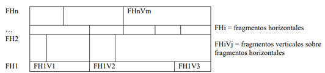

En el diseño de las BDD, una cuestión clave es la distribución de los datos. El encargado de esta tarea es el DBA, el cual establece en tiempo de diseño el modelo de distribución de los datos. Esta definición es progresiva, de acuerdo a la evolución de la BD y al modo en que el SGBD resuelve:
• La distribución de las funciones
• La sincronización de las operaciones
• La descomposición de las consultas
3.3.1 Alternativas de diseño
En todo proceso de diseño hay dos aproximaciones básicas:
• la ascendente o Top-Down.
• la descendente o Bottom-Up.
El diseño ascendente se utiliza, cuando se crea un BDD a partir de varias BBDD locales existentes. Se parte de varios esquemas lógicos locales (ELL) con ubicaciones diferentes que se integran en un único esquema lógico global (ELG).
El diseño descendente parte de un ELG y construye varios ELL definidos a partir de esquemas de fragmentación, asignación y replicación que determinan la distribución de los datos en los distintos nodos de la red.
3.3.2 Tipos de fragmentación
La fragmentación es un conjunto de técnicas para dividir la BD en unidades lógicas, llamadas fragmentos, cuyo almacenamiento puede asignarse a los diversos sitios. Estas técnicas se utilizan durante el proceso de diseño de BDD. La información concerniente a la fragmentación de los datos se almacena en un catálogo global del sistema al que tiene acceso el software cliente cuando es necesario.
La fragmentación es un concepto que surge en los modelos que incluyen algún tipo de particionado y tiene implicaciones físicas y lógicas.
• Fragmento lógico: Bloque de datos localizado en algún SGBDD que puede ser descrito (en términos relacionales) como el resultado de una proyección y/o una selección de la información contenida en la BD, de modo que resulten subconjuntos disjuntos de ella. Por tanto, una vez que la BD ha sido dividida en un conjunto de fragmentos, todos los datos aparecen en uno y sólo uno de estos fragmentos.
• Fragmento físico: Subconjunto de un fragmento lógico que se almacena completo en un nodo. Cada uno de los fragmentos físicos de un fragmento lógico se localizan en uno o más nodos dependiendo del modelo de distribución de los datos.
El esquema de fragmentación es el conjunto de las distintas relaciones que se han obtenido del ELG y las condiciones empleadas para esta división expresado en algebra relacional.
Existen distintas formas de fragmentar una relación [2]:
La fragmentación vertical divide la relación verticalmente en columnas, así cada fragmento mantiene ciertos atributos de la relación original.
La fragmentación se realiza mediante la operación PROYECCIÓN: ∏Li (R) donde i= 1...n y Ri es el conjunto de fragmentos en que se divide la relación original. Li es el criterio de fragmentación. En la Ilustración 2 se puede observar un esquema de la fragmentación vertical y en el Ejemplo 1 un caso de fragmentación vertical de una tabla.
Para que la fragmentación vertical sea correcta los subconjuntos de atributos Li han de cumplir: La unión de todos los Li contiene todos los atributos de la relación original. La intersección de todos los Li consiste en la clave primaria de la relación original. Todos los Li tienen en común la clave primaria para poder reconstruir R mediante JOIN.
Fragmentación horizontal
La fragmentación horizontal divide la relación en subconjuntos de tuplas, cada uno de ellos con un significado lógico.
La fragmentación se realiza mediante la operación SELECCIÓN: σ Ci (R)
Existen dos tipos de fragmentación horizontal: primaria y derivada. En la Ilustración 3 se puede observar un esquema de la fragmentación horizontal y en Ejemplo 2 un caso de fragmentación horizontal de una tabla.
• Primaria, es una selección de la relación original. La fragmentación se realiza mediante la operación Ri = σPi (R) donde Pi es un predicado sobre uno o más atributos de R y es la condición empleada para seleccionar el contenido de los fragmentos.
• Derivada, es una selección en función de predicados definidos sobre atributos de otras relaciones o fragmentos; esto se debe a que la relación R a fragmentar depende de la relación Q. Además, R hace referencia a Q mediante una clave ajena. La fragmentación se realiza mediante la operación Ri = R Qi donde Qi corresponde al conjunto de fragmentos en los que se ha dividido la relación Q. La semicombinacion ( ) se hace por el atributo que relacionan estas dos tablas.
Para que la fragmentación horizontal sea correcta se tiene que cumplir que:
• La unión de todos los Ri sea la relación original (R).
• La intersección de todos los Ri sea vacía.
La relación original se recupera mediante UNION de los fragmentos.
Fragmentación mixta o híbrida
La fragmentación mixta es la mezcla de fragmentación horizontal y vertical. Hay dos tipos de fragmentación mixta:
• Fragmentación VH
Es una fragmentación vertical seguida de una fragmentación horizontal, sobre cada uno de los fragmentos verticales. Véase en el esquema siguiente.
Fragmentación HV
Es una fragmentación horizontal seguida de una fragmentación vertical, sobre cada uno de los fragmentos horizontales. Véase en el siguiente esquema.

Bibliografia:
Martín, L. M. (2010). Diseño y Construcción de Bases de . Universidad Carlos III de Madrid .
Ortiz, P. A. (s.f.). TRANSACCIONES EN . Base de datos distribuidas (pág. 20). Universidad Autónoma Metropolitana.